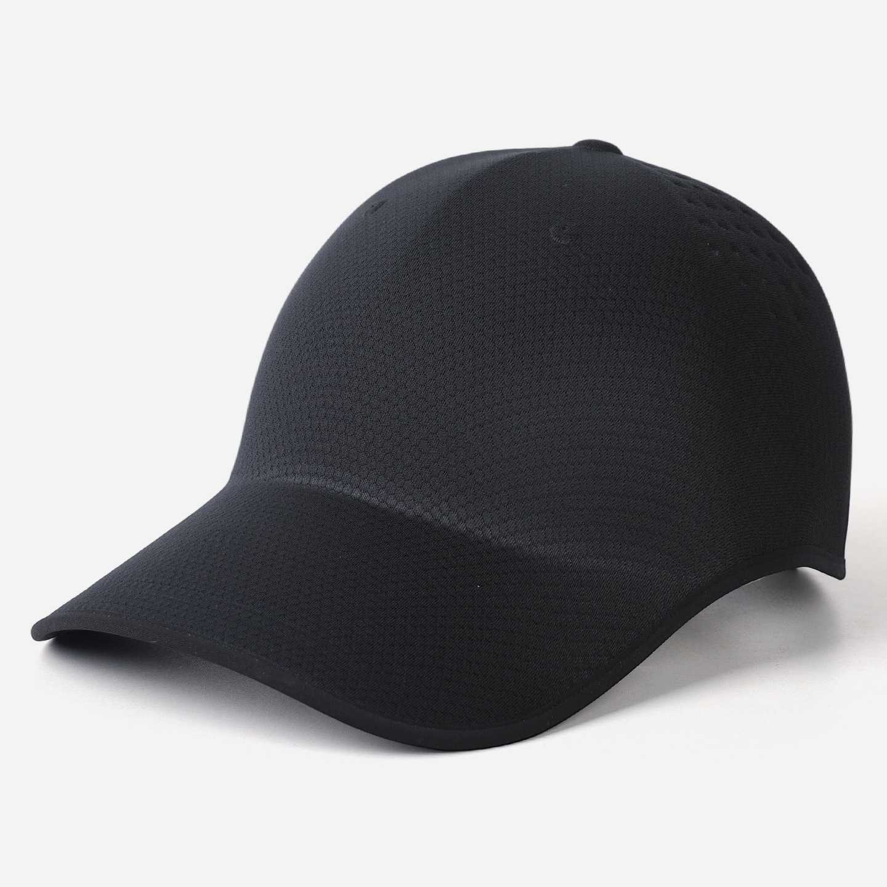
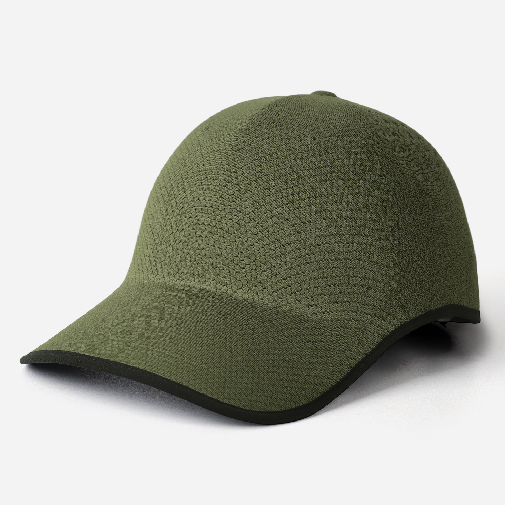
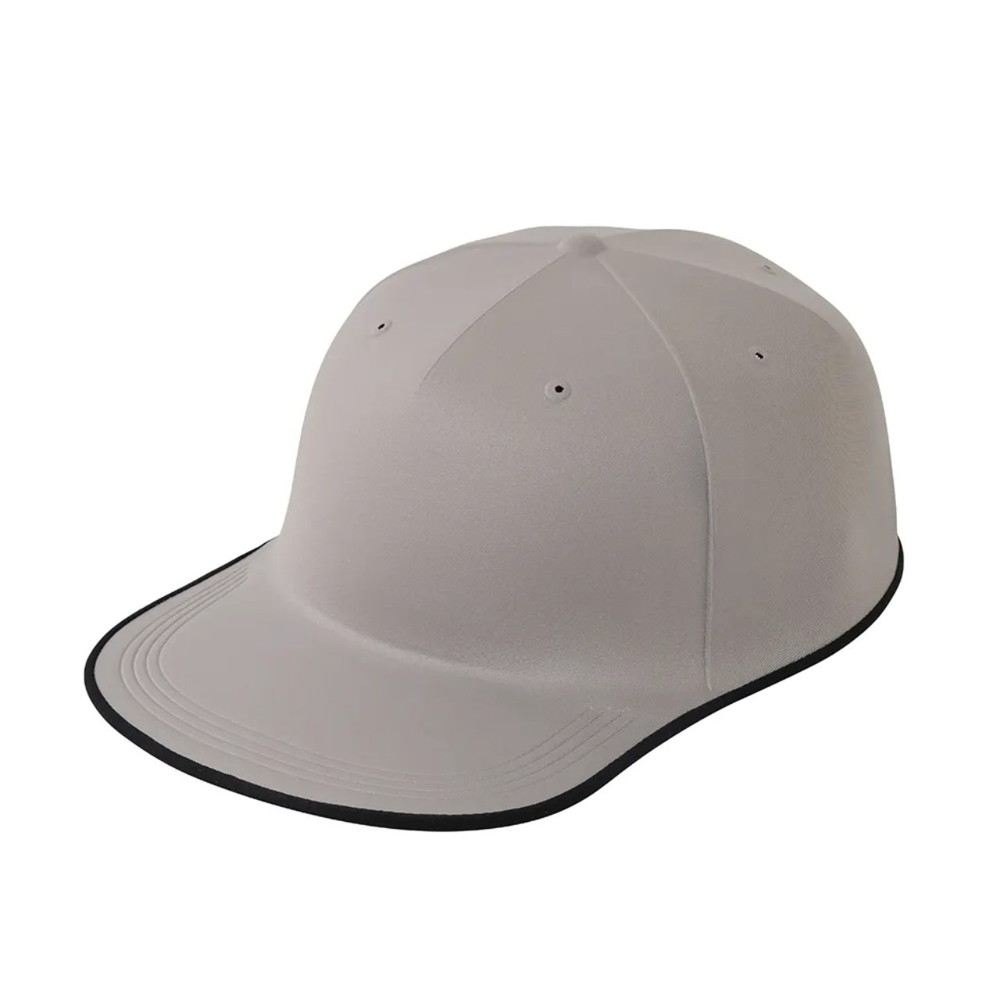

Obsidian
Solid black · 105 g
View piece
Yiwu, China — seamless headwear
The quiet architecture of a cap.
One-piece shells, molded rather than sewn. A small collection built with the patience of a tailor and the discipline of an atelier.
Minimum 300 pieces · Samples in 7–10 days

ShellOne-piece, seamless
Weight105–108 g
Stretch75% Nylon · 25% Spandex
The Collection
Three shells, one discipline.
Every piece begins as a single molded shell. Colour is the only variable — the line never breaks.

Seasonal
Olive Field
Deep olive · 106 g
View piece

Atelier
Bone
Warm ivory · 105 g
View piece
The Making
Slow where it matters.
Three stages, one continuous line of work — from the mold that forms the shell to the carton that ships it.
01
Molded, not sewn.
A seamless cap begins as a single shell formed on a mold — no stitched panels, no crown seams, nothing to interrupt the line.
The shell keeps its shape through wear and washing, and the silhouette stays clean from every angle.

02
Your mark, applied quietly.
Logos are applied according to material and artwork — embroidery, print or heat transfer — with placement, size and thread colours confirmed on a pre-production sample.
Colourway matching, woven labels and private-label packaging are coordinated in the same step, so branding never delays production.

03
Packed to travel.
Visors fold; caps hold their form. Packing is specified per program — polybag, carton count, label placement — so products arrive shelf-ready.
Export documents and shipment details are coordinated with the production partner, closing the loop from mold to market.

The Standard
What we refuse to rush.
One-piece integrity
No panels, no crown seam. The shell holds its line through wear and wash.
105 grams
Light enough to forget, structured enough to keep its shape.
Sample first
Every program is confirmed on a physical sample before bulk begins.
Export ready
Cartons marked by hand, loading photographed, documents coordinated.
By invitation
The Atelier Circle
A quiet programme for long-standing partners — reserved capacity, a private colour lab, and first access to new shells.
-
01
Reserved capacity
Production slots held each season for Circle members.
-
02
The colour lab
Custom dye lots and thread matching from 300 pieces.
-
03
First look
New shells and prints, before they reach the catalogue.
Introductions are reviewed within two working days.